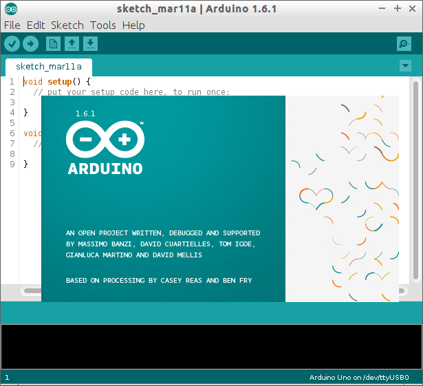

軟體支持
Arduino IDE:一個開源的Arduino軟體（IDE），可以很容易地編寫代碼，並將其上傳到板上。在Arduino上執行的程式可以使用任何能夠被編譯成Arduino機器碼的程式語言編寫。

Arduino IDE:一個開源的Arduino軟體（IDE），可以很容易地編寫代碼，並將其上傳到板上。在Arduino上執行的程式可以使用任何能夠被編譯成Arduino機器碼的程式語言編寫。

Processing：Processing将Java的语法简化并将其运算结果“感官化”，让使用者能很快享有声光兼备的交互式多媒体作品。
Arduino Yun：Arduino Yun是在ATmega32u4和Atheros AR9331基礎上的微控制器板。Atheros處理器支持一種基於OpenWrt的Linux發行版，命名為OpenWrt-Yun。
iTank：我們採用旗標公司開發的iTank 智慧型移動平台，因為iTank可以擺脫上述問題，在主控板上配置有內建韌體的微處理器，可控制所有硬體，使用者並不需要學習此微處理器的程式，只要選用自己偏好的開發板，例如 Arduino UNO、Arduino Yun等等。
舵機：舵機（英文叫Servo）：它由直流電機、減速齒輪組、感測器和控制電路組成的一套自動控制系統。
電位器: 電位器是具有三個引出端、阻值可按某種變化規律調節的電阻元件。電位器通常由電阻體和可移動的電刷組成。